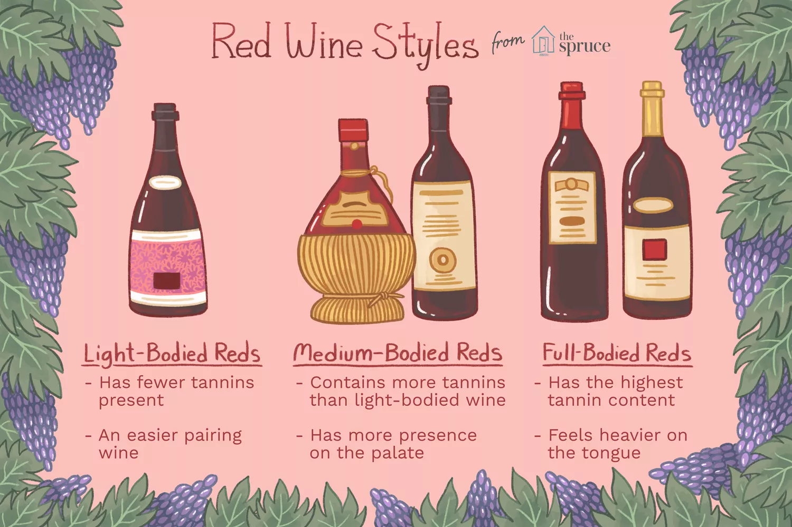

Wine basics
Most wine is made with grapes, but they're not like the ones you find in the grocery store.
Wine grapes (latin name: Vitis vinifera) are smaller, sweeter, have thick skins, and contain seeds.
There are over 1,300 wine grape varieties used in commercial production but only about 100
of these varieties make up 75% of the world's vineyards.
Today, the most planted wine grape in the world is Cabernet Sauvignon
("cab-err-nay saw-vin-yon").
Red Wine Information & Basics
Red Wine Styles
As with all wines, the particular winemaker will have adequate “say” in the style of wine he will produce. That said, red wines are often classified by “body-type.” For example, one might say that a certain red wine is “light-bodied” – referring to the mouth-feel and tannin structure. A light-bodied wine will have fewer tannins present and less presence on the palate. These wines tend to be less demanding partners with flavor-filled foods. An example of a light-bodied red wine would be derived from the Gamay grape varietal, such as France’s famed young red wine: Beaujolais Nouveau. A medium-bodied red wine will contain more tannins than the above Beaujolais Nouveau, but will not have near the pucker power of a high-powered California Cabernet Sauvignon or an Italian Super Tuscan. Typical examples of medium-bodied red wines include Merlot, Shiraz or a Chianti. Full-bodied red wines boast the highest tannin (and often alcohol) content. Prime examples of full-bodied reds are France’s esteemed Bordeaux wines, California’s key Cabs and Italy’s sizzling Super Tuscans. In general, light-bodied wines tend to “feel” more like water in the mouth. In contrast, “full-bodied” wines feel heavier, more like milk. This effect is due in large part to the higher tannin (and again, alcohol) content. Red wines are also often described as either dry or sweet.
| Wine | Appetizers | Main Course | Dessert |
|---|---|---|---|
| Cabernet Sauvignon/Left Bank Bordeaux/Meritage | Carpaccio, pungent (stinky) cheeses | Beef, duck, lamb, lentils, hearty stews, beef Wellington | Dark and bittersweet chocolate |
| Right Bank Bordeaux/Merlot | Antipasto, aged cheeses | Veal, sausage, salmon, tuna, eggplant, game meats | Raspberry, cherry or other dark berry desserts |
| Zinfandel/Primitivo | Seared Ahi tuna, spicy chicken or beef satay | Barbeque, tomato sauce, spicy sausage, duck, beef, pizza | Dark berry desserts, carrot cake |
| Pinot Noir/Burgundy | Creamy cheeses, pâté, roasted vegetables | Veal, chicken, turkey, lean cuts of beef, lamb | Berry tart, flourless chocolate cake, crème brûlée, figs |
| Syrah/Rhône wine | Bruschetta, stuffed mushrooms, tapenade | Ham, lamb, pasta with tomato sauce, pizza, barbeque | Cherry pie, chocolate mousse |
| Malbec | Bleu cheese, stuffed mushrooms | Burgers, steak chimichurri, meats with herbs, grilled meat, lamb, roasted vegetables, beef fajitas | Dark chocolate, chocolate covered cherries |
Whine wine
Explore the different types of white wines until you find the one that tempts your tastebuds. By trying different varieties, you might be surprised with what you like and what is available.
Sparkling wine
First sparkling bottle was opened